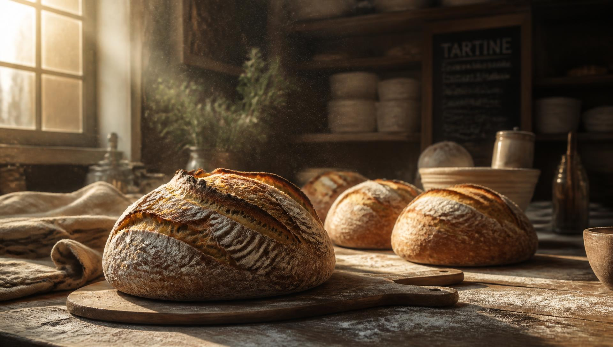
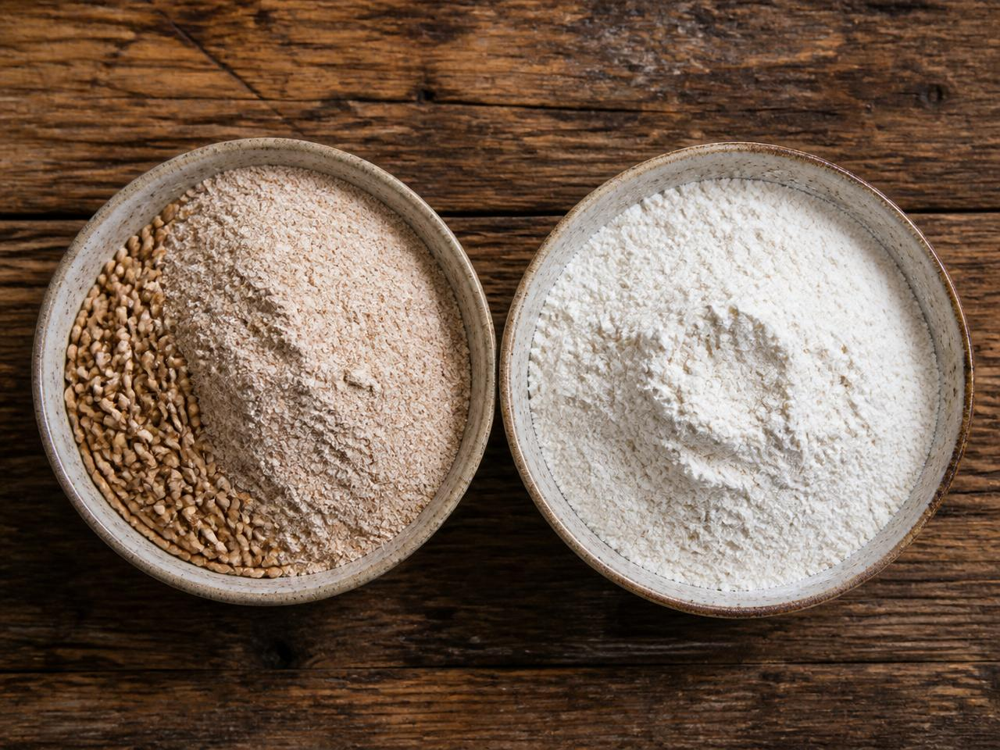
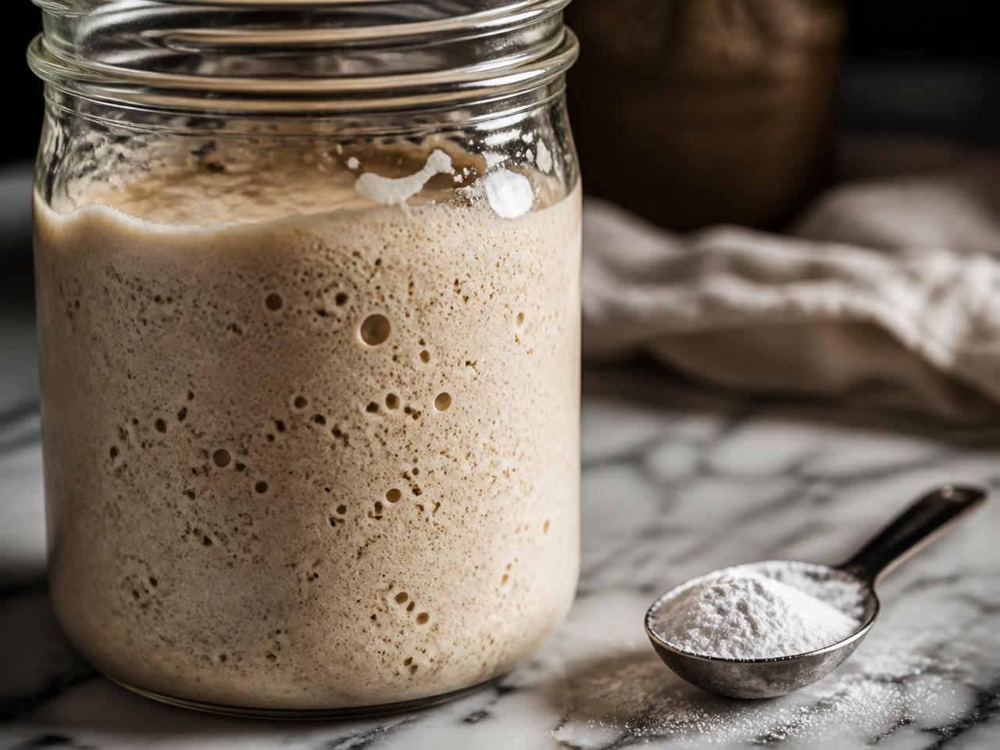
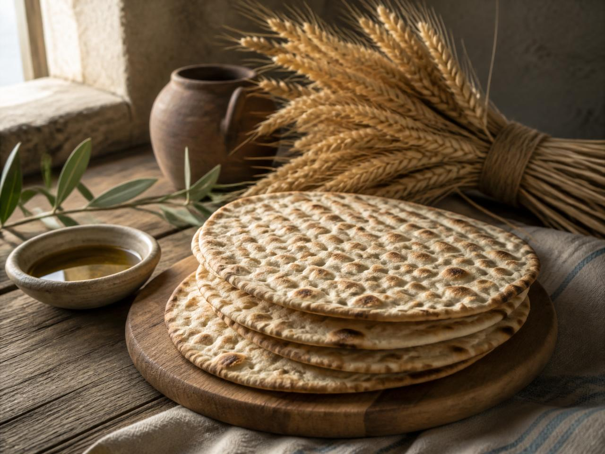
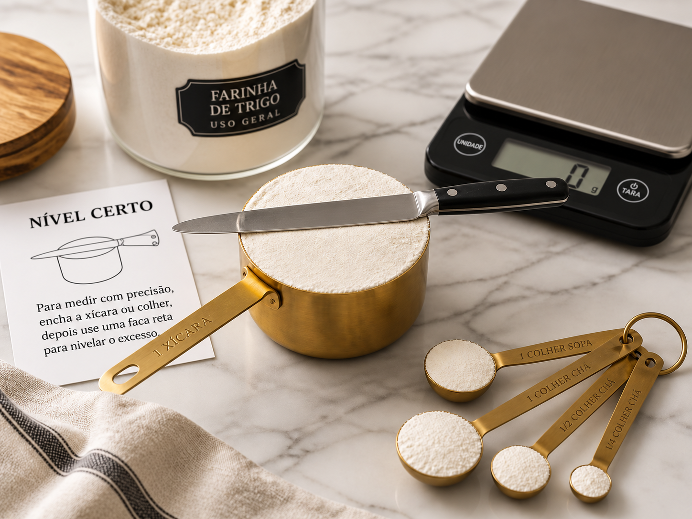
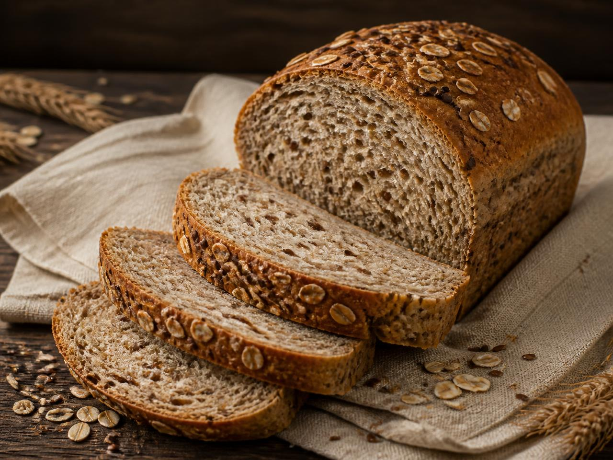
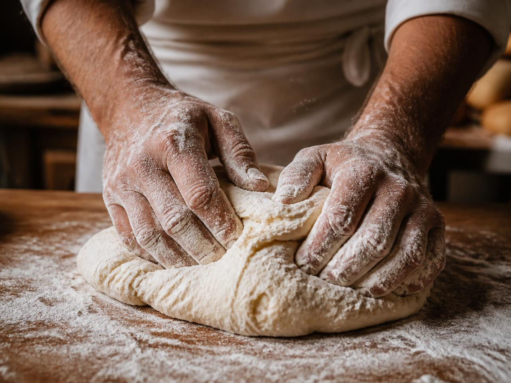
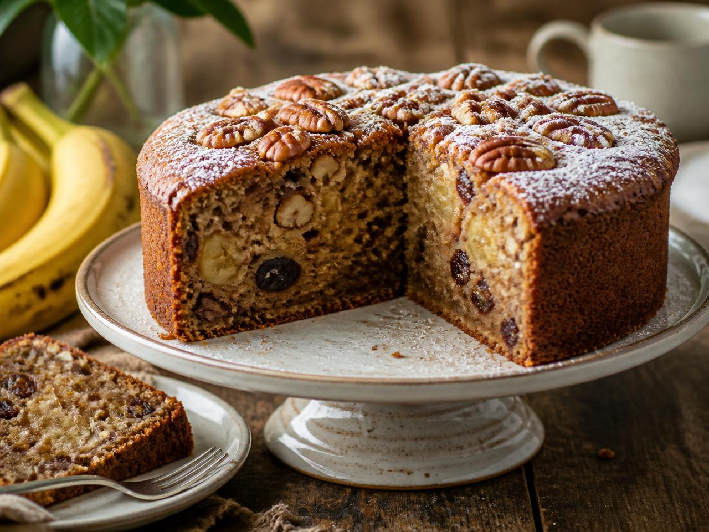
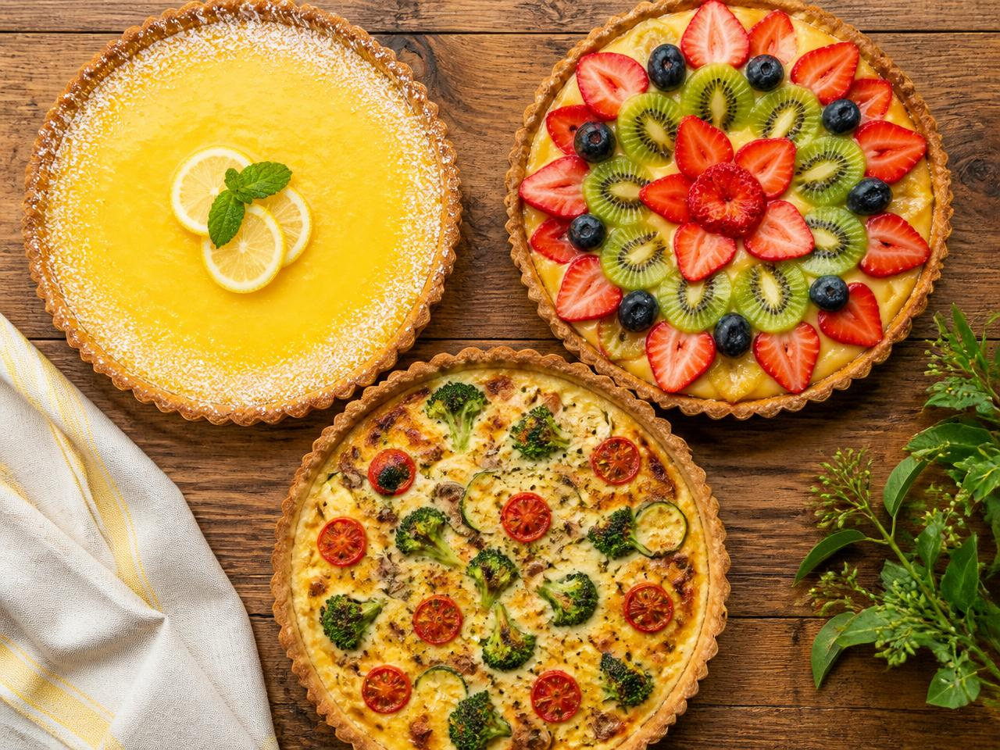
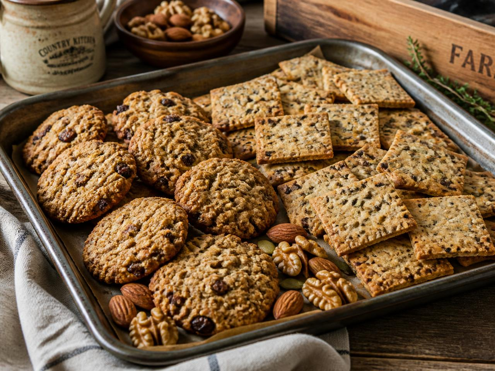

Do grão ao forno: farinhas, fermentos, pães, bolos, tortas e biscoitos — o guia completo com respostas, técnicas e receitas.
O grão de trigo tem três partes: o farelo (casca, rico em fibras e minerais), o gérmen (o embrião, com vitaminas do complexo B, vitamina E e boas gorduras) e o endosperma (a parte branca, quase só amido e um pouco de proteína).

A farinha integral é feita com o grão inteiro, por isso guarda fibras, vitaminas, minerais e gorduras boas. A farinha branca é refinada: perde o farelo e o gérmen e fica praticamente só com amido, com muito menos nutrientes.
| Item | Integral | Branca (refinada) |
|---|---|---|
| Fibras | ≈ 10 g | ≈ 2,5 g |
| Proteínas | ≈ 13 g | ≈ 10 g |
| Ferro | ≈ 3,6 mg | ≈ 1,2 mg |
| Magnésio | ≈ 137 mg | ≈ 22 mg |
| Vitaminas do complexo B e vitamina E | Preservadas | Muito reduzidas (às vezes repostas por enriquecimento) |
Os dois fazem a massa crescer produzindo gás carbônico (CO₂), mas por caminhos completamente diferentes: um é vida, o outro é reação química.
Saccharomyces cerevisiae — um fungo vivo (levedura), vendido fresco, seco instantâneo ou como levain/massa madre.
A levedura come os açúcares da farinha e, na fermentação, libera CO₂, álcool e compostos aromáticos. O gás fica preso na rede elástica de glúten e infla a massa. Precisa de tempo, temperatura morna (26–32 °C) e sova para desenvolver o glúten.
Pães em geral, pão sovado, pão italiano, baguete, pizza, rosca, brioche, sonho — tudo que precisa de miolo elástico, alvéolos e sabor fermentado.
Mistura de bicarbonato de sódio + um ácido (fosfato/pirofosfato) + amido. Não tem nada vivo.
Ao encontrar líquido e, principalmente, o calor do forno, o ácido reage com o bicarbonato e libera CO₂ na hora. É ação rápida: massa batida deve ir direto ao forno, e não se sova — sovar desenvolveria glúten e deixaria o bolo borrachudo.
Bolos, muffins, cupcakes, panquecas, waffles, biscoitos amanteigados, pão de queijo, broas e massas rápidas (quick breads).

| Biológico | Químico | |
|---|---|---|
| Natureza | Ser vivo (levedura) | Substância química |
| Tempo de ação | Horas (crescimento) | Minutos / no forno |
| Precisa sovar? | Sim | Não |
| Sabor | Aromático, marcante | Neutro |
| Resultado | Miolo elástico e alveolado | Miolo macio e fofo |
Nunca troque um pelo outro na mesma quantidade: bolo com fermento biológico fica com gosto de pão, e pão com pó royal fica pesado e esfarelento.
Sozinho, o bicarbonato só libera gás se houver um ingrediente ácido na receita (limão, vinagre, iogurte, cacau, melado, maçã). Sem ácido, deixa gosto amargo de sabão. É por isso que receitas de bolo de banana ou de chocolate costumam pedir bicarbonato, e não apenas fermento em pó.
Poucos ingredientes têm tanto significado espiritual quanto o fermento. Ele é imagem do que se espalha silenciosamente — para o bem e para o mal.
Êxodo 12:15,19 — “Sete dias comereis pães asmos... porque quem comer coisa levedada, desde o primeiro até ao sétimo dia, essa alma será cortada de Israel.” Também Êxodo 13:7 e Levítico 2:11 (ofertas de cereais não podiam levar fermento).
Na saída do Egito, a pressa da libertação não deixou tempo para a massa crescer: o pão foi assado sem fermento.
Mateus 13:33 — “O Reino dos céus é semelhante ao fermento, que uma mulher tomou e misturou em três medidas de farinha, até que tudo ficou levedado.” Aqui o fermento é positivo: o evangelho transforma a pessoa por dentro, aos poucos.
Em sentido de alerta: Mateus 16:6 (“guardai-vos do fermento dos fariseus”) e 1 Coríntios 5:6-8 — “um pouco de fermento faz levedar toda a massa... celebremos a festa com os asmos da sinceridade e da verdade.”

Na Páscoa, o fermento representa o pecado, a corrupção e a má influência — algo pequeno que, sem ser visto, se espalha e altera tudo. Por isso Israel tirava todo o fermento de casa e comia o pão asmo durante sete dias (a Festa dos Pães Asmos), lembrando:
“Purificai-vos, pois, do velho fermento, para que sejais massa nova.” — 1 Coríntios 5:7
Essa recomendação clássica tem razões práticas e digestivas — e leva a escolhas melhores de receita.
Açúcar em grande quantidade junto com leite e ovos retarda a digestão e favorece a fermentação no aparelho digestivo, causando gases, azia, desconforto e má absorção. Cada um desses alimentos exige um processo digestivo diferente; juntos e em excesso, competem entre si.
A combinação (típica de leite condensado, cremes, brigadeiros e recheios) concentra açúcar simples, gordura saturada e colesterol na mesma colherada. Isso pesa sobre fígado, pâncreas e coração e favorece obesidade, diabetes e cárie.
Leite e ovos são ricos em proteína e água: são o meio perfeito para bactérias como Salmonella. Cremes doces mal cozidos ou mal refrigerados são uma das causas mais comuns de intoxicação alimentar em festas.

Panificação é química. Farinha (estrutura), líquido (hidratação), fermento (gás), gordura (maciez), açúcar (cor, sabor, alimento da levedura) e sal (controle da fermentação e sabor) trabalham em proporção. Alterar um deles quebra o equilíbrio: sobra fermento e o bolo murcha; falta líquido e o pão fica seco; sobra sal e a levedura morre. Diferente do feijão, aqui não se corrige “a olho” depois de assado.
| Medida | Equivale a | Peso aproximado |
|---|---|---|
| 1 xícara (chá) | 240 ml | farinha ≈ 120 g · açúcar ≈ 180 g · água ≈ 240 g |
| 1 colher (sopa) | 3 colheres de chá · 15 ml | farinha ≈ 8 g · açúcar ≈ 12 g · óleo ≈ 14 g |
| 1 colher (chá) | 5 ml | sal ≈ 6 g · fermento em pó ≈ 4 g |
| 1/2 xícara | 120 ml · 8 colheres de sopa | — |
| 1 kg de farinha | ≈ 8 xícaras | — |
| 10 g fermento seco | ≈ 30 g fermento fresco | para ≈ 1 kg de farinha |
Receitas de pão de grãos inteiros, biscoitos, pães asmos, baguete, pão italiano e pão sovado. Aqui estão receitas testadas e as técnicas por trás delas.


Ingredientes: 3 xíc. farinha de trigo integral · 1 xíc. farinha de trigo branca · ½ xíc. farinha de centeio · ½ xíc. aveia em flocos · 3 col. sopa linhaça (2 na massa, 1 para polvilhar) · 2 col. sopa sementes de girassol · 10 g fermento biológico seco · 1½ col. chá sal · 2 col. sopa melado ou mel · 3 col. sopa azeite · 500 ml água morna (≈ 35 °C).
Ingredientes: 1 kg farinha de trigo · 10 g fermento seco · 2 col. chá sal · 3 col. sopa açúcar mascavo · 4 col. sopa óleo ou margarina vegetal · 450–500 ml água morna.
Ingredientes: 500 g farinha de trigo (de preferência tipo 1) · 380 ml água (76% hidratação) · 5 g fermento seco · 10 g sal · 1 col. chá açúcar.
Ingredientes: 500 g farinha · 330 ml água · 6 g fermento seco · 10 g sal.
Ingredientes: 2 xíc. farinha de trigo integral · ½ col. chá sal (opcional) · 3 col. sopa azeite · ½ a ¾ xíc. de água.
Perfeito para estudar a Páscoa e a Santa Ceia — e para o requisito bíblico da especialidade.
Ingredientes: 1 xíc. farinha integral · 1 xíc. aveia em flocos finos · 3 col. sopa gergelim · 1 col. chá sal · 1 col. chá orégano · 5 col. sopa azeite · ½ xíc. água.
Estique um pedacinho de massa entre os dedos: se formar um véu translúcido sem rasgar, o glúten está pronto. Se rasgar, sove mais.
Aperte a massa crescida com o dedo: se a marca volta devagar e parcialmente, está no ponto. Se afunda e não volta, passou.
Água no forno nos primeiros minutos mantém a casca úmida, o pão cresce mais e depois forma crosta brilhante e crocante.
Opções de bolo básico, de mistura pronta, de frutas ou castanhas, sem leite ou sem glúten.

Ingredientes: 3 bananas bem maduras amassadas · 2 ovos · ½ xíc. óleo · ⅓ xíc. açúcar mascavo (ou 4 tâmaras batidas) · 1½ xíc. farinha integral · 1 xíc. aveia · ½ xíc. castanhas picadas · 1 col. chá canela · 1 col. sopa fermento em pó.
Ingredientes: 1 xíc. suco de laranja + raspas · ½ xíc. óleo · ½ xíc. açúcar demerara · 2 ovos (ou 2 col. sopa linhaça hidratada em 6 col. de água) · 2 xíc. farinha de trigo · 1 col. sopa fermento em pó.
Ingredientes: 1 xíc. flocão de milho · 1 xíc. fubá · ½ xíc. açúcar demerara · 2 ovos · ½ xíc. óleo · 1½ xíc. leite vegetal (ou de coco) · 1 col. sopa fermento em pó · pitada de sal.
Básico: 3 ovos · ¾ xíc. açúcar · ½ xíc. óleo · 1 xíc. leite (ou vegetal) · 2 xíc. farinha · 1 col. sopa fermento · 1 col. chá baunilha. Bata ovos, açúcar, óleo e leite; junte a farinha e o fermento; asse 180 °C, 35 min.
Mistura pronta: siga exatamente o rótulo (líquidos e ovos indicados), bata só até homogeneizar, asse imediatamente na temperatura sugerida. Para melhorar: troque a água por leite vegetal, acrescente raspas de limão ou 2 col. de aveia — e compare o preço, o sabor e a lista de ingredientes com o bolo feito do zero. É um excelente exercício de rótulo para a reunião do clube.
Sem exagerar no açúcar, no creme de leite ou no leite condensado. A doçura vem das frutas.

Massa: 2 xíc. farinha (metade integral) · 100 g margarina vegetal gelada · 2
col. sopa açúcar · 3–4 col. sopa água gelada.
Recheio: 5 maçãs em fatias finas · suco
e raspas de 1 limão · 2 col. sopa açúcar mascavo · 1 col. chá canela · 1 col. sopa amido de milho.
Massa (assada): a mesma acima, assada completamente por 20–25 min e
esfriada.
Recheio: 2 xíc. frutas frescas fatiadas (morango, kiwi, manga, uva) · 1
pacote de gelatina de fruta sem açúcar ou 1 xíc. de suco natural + 1 col. sopa gelatina incolor hidratada.
Massa liquidificador: 2 ovos · 1 xíc. leite (ou vegetal) · ½ xíc. óleo · 1½
xíc. farinha (metade integral) · 1 col. sopa fermento em pó · 1 col. chá sal.
Recheio:
1 cebola · 2 dentes de alho · 1 cenoura ralada · 1 abobrinha em cubos · 1 xíc. milho · 1 tomate sem sementes
· azeite, orégano, salsinha, sal.

Ingredientes: 2 bananas maduras amassadas · 1½ xíc. aveia em flocos · ½ xíc. farinha integral · ⅓ xíc. uvas-passas · ⅓ xíc. castanha-do-pará ou nozes picadas · 3 col. sopa óleo de coco ou azeite suave · 1 col. chá canela · 1 col. chá baunilha · pitada de sal · (opcional) 1 col. sopa mel.
Rende ≈ 20 unidades. Sem açúcar refinado: a doçura vem da banana e das passas.
Tenha um arquivo organizado com todas as receitas feitas — e um levantamento de quantas receitas usam frutas sem grandes quantidades de açúcar.
São dez receitas — um bom desafio é chegar a quinze com frutas da estação da sua região.
Pães fermentados já eram feitos no Egito antigo. A descoberta provavelmente foi acidental: uma massa esquecida capturou leveduras do ar e cresceu.
A cor dourada e o aroma da crosta vêm do encontro de açúcares com proteínas acima de 140 °C — a mesma reação que doura o café e o pão na chapa.
O sal fortalece o glúten e freia a levedura, dando fermentação mais lenta e uniforme. Massa sem sal cresce rápido e desanda.
Existem fermentos naturais mantidos por famílias há mais de 100 anos, alimentados só com farinha e água.
Não é só perda de água: o amido se recristaliza (retrogradação). Guardar na geladeira acelera isso; congelar, não.
O vapor no início do forno mantém a superfície da massa úmida por mais tempo, permitindo que o pão cresça melhor antes de formar a crosta. Ele também ajuda a criar uma casca mais fina, crocante e brilhante.